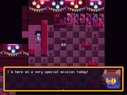
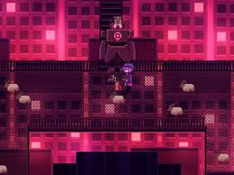
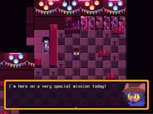
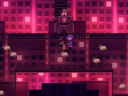

OneShot Review
Game Information
Developer: Future Cat, published by Degica
Release Date: December 8, 2016
Platforms: PC, macOS, Nintendo Switch.
Art Style: 2D pixel art with surreal and emotional overtones
Introduction
OneShot is a deeply introspective puzzle-adventure game that breaks the fourth wall and immerses players in a unique narrative. Developed by indie studio Future Cat, it challenges players with its innovative mechanics and emotional storytelling.
Gameplay Mechanics
The game features environmental puzzles that require thinking outside the box—sometimes literally. Players interact not only with the game world but also with their own computer, manipulating files and settings to progress. The game emphasizes the player's relationship with Niko, the protagonist, creating a bond rarely seen in traditional games.
Art Style and Atmosphere
The pixel art is expressive and evocative, blending bright, hopeful visuals with dark, haunting undertones. The contrast mirrors the game’s themes of hope and sacrifice. The soundtrack complements the visuals, with melodies that evoke nostalgia and melancholy.
Story and Themes
The narrative centers around Niko, a child tasked with restoring a dying world by delivering the sun. As players guide Niko, they’re faced with moral dilemmas and choices that have lasting impacts. The game explores themes of agency, connection, and the cost of hope, resonating deeply with players.
Legacy
OneShot has earned a cult following for its innovative design and emotional impact. It’s a game that stays with you, encouraging reflection long after the credits roll.
 


